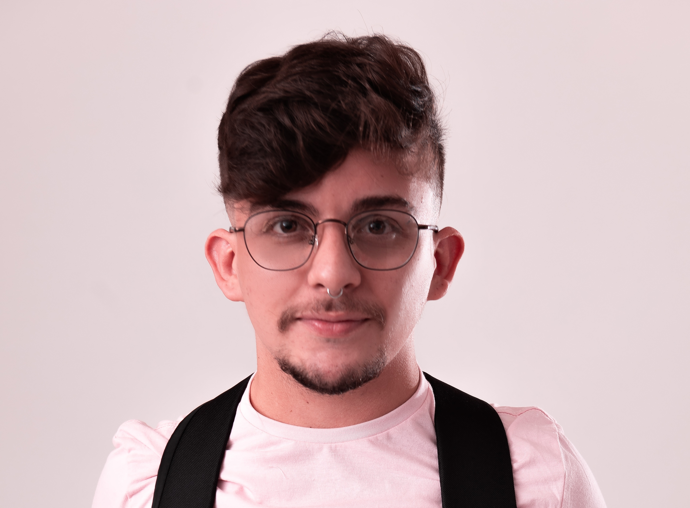

José Venício Lira Rodrigues
23/12/1997 Rua Antônio Pessoa de Abreu, 120, Bela vista (83)99198-4088
Trabalho na área de atendimento ao público desde 2016 e sempre busco firmar raízes sólidas nas empresas onde estou prestando serviços. Sempre fui apaixonado pela tecnologia, mas só tive a oportunidade de ingressar na área em 2022. Sou comunicativo e rápido em resolver problemas e costumo ser amigável e trabalhar muito bem em times. Pretendo atuar na área full stack ou desenvolvimento mobile.
Exepriências:
- Chilli Beans Cajazeiras. (2021 - presente)
Vendedor varejista - Açaí da Leila (2018 - 2021)
Entregador;
Garçom. - Ateliê Ziroca Art's (2016 - 2018)
Costureiro;
Vendedor;
Estoquista. - Cores e traços (2016 - 2019)
Gestão de fluxo de caixa;
Venda direta ao público;
Gestão empresarial. - Mecadinho Rodrigues (2014 - 2016)
Caixa.
Outras experiências:
- I Simpósio de inglês pelo instituto IFPB - Cajazeiras, 2015.
- Equipe Vencedora do Hackathon 2022.